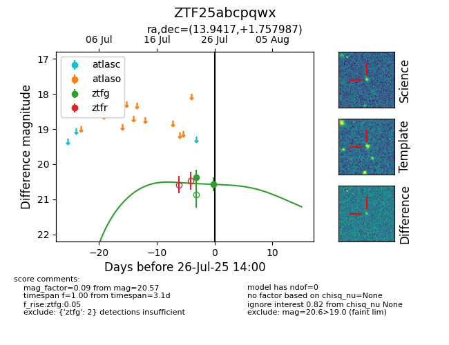

Target ZTF25abcpqwx at 2025-07-26 14:00, see:
FINK: fink-portal.org/ZTF25abcpqwx
Lasair: lasair-ztf.lsst.ac.uk/objects/ZTF25abcpqwx
ALeRCE: alerce.online/object/ZTF25abcpqwx
alt names
ZTF25abcpqwx (ztf,fink)
coordinates:
equatorial (ra, dec) = (13.9417,+1.75799)
galactic (l, b) = (125.1703,-61.09494)
photometry
last ztfg=20.57
2 ztfg detections
